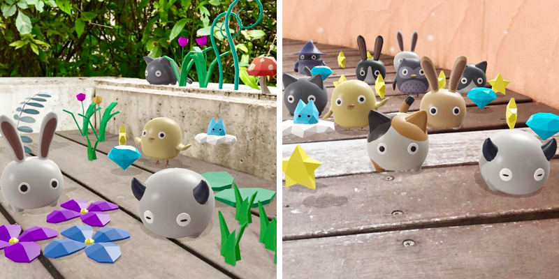
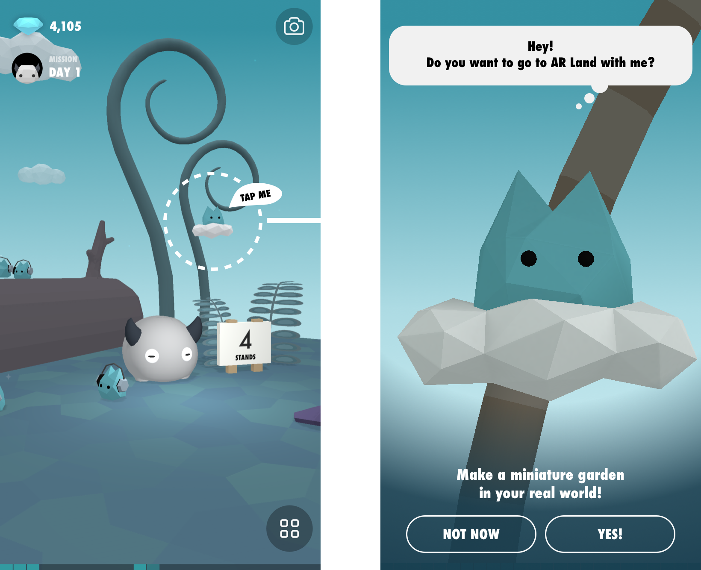
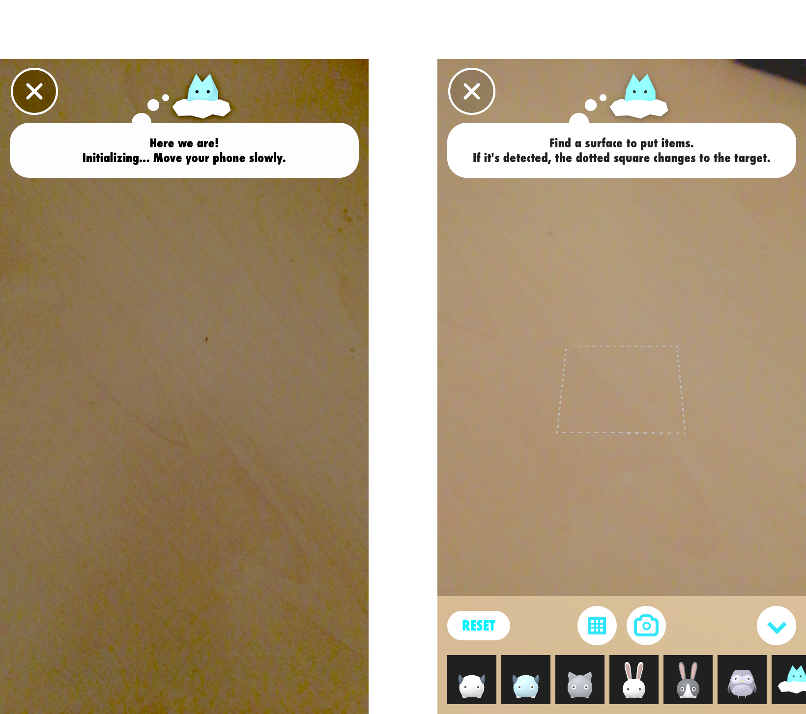
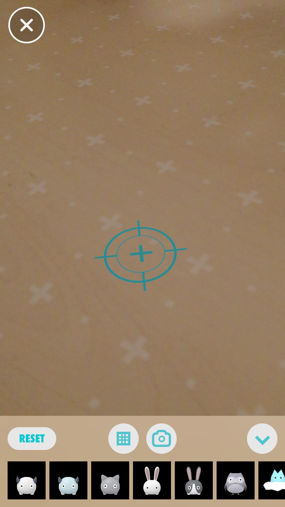

* Requires iOS 11, iPhone SE/6s or later

AR (Augmented Reality) is a integrated view of computer-generated information with your environment in real time.
In Standland, you can enjoy AR experience by placing Standland characters and items in your world. We call the place AR Land.
Tap the floating Cloud Gemmy to go to AR Land.
In AR Land, move your iPhone side to side slowly.

When the white dotted square and the item list are displayed, it is a sign that the iPhone is finding a surface. Please try moving your iPhone side to side, up and down toward a surface of the desk or table where you want to place items.
At this point, you can place items. But it's better to do it after a surface is detected since it will stabilize.
Once a surface is recognized, it will look like this.

In the iPhone AR, you can detect a horizontal plane, but if it is not detected well, the item you placed might be out of position or the size might be incorrect.
The easy-to-detect plane is a flat, tidy, non-reflective, textured surface in a well-lit area.
After changing location or finding a surface for a long time, please try resetting.
Item placement information will be lost if you leave the AR land or leave the Standland app.
In that case, you need to "reset" and start over from the beginning.